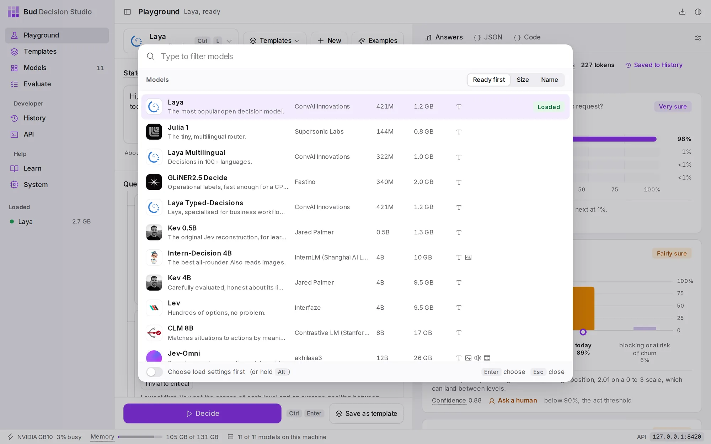
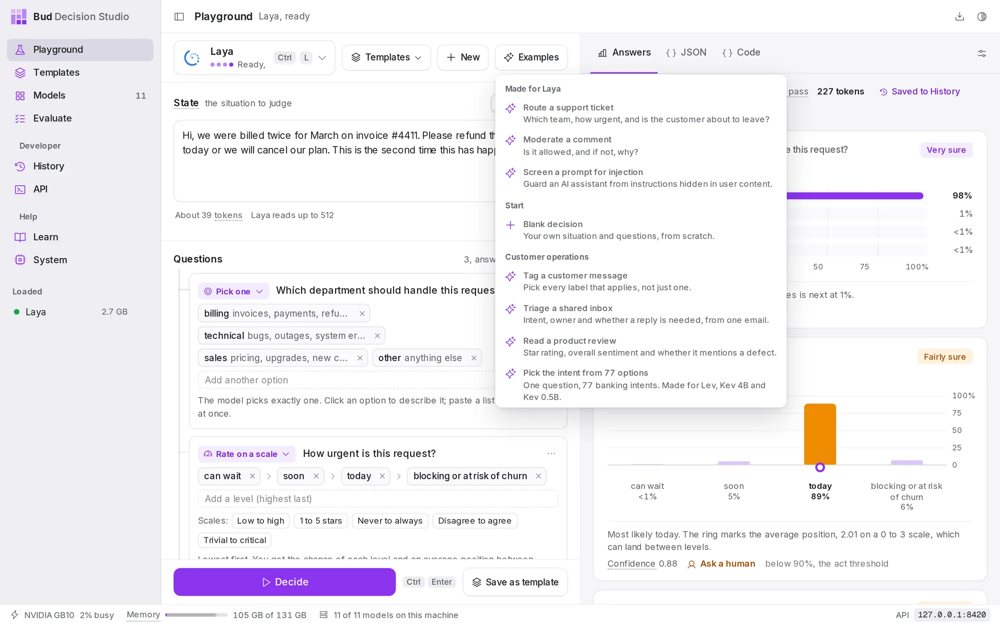
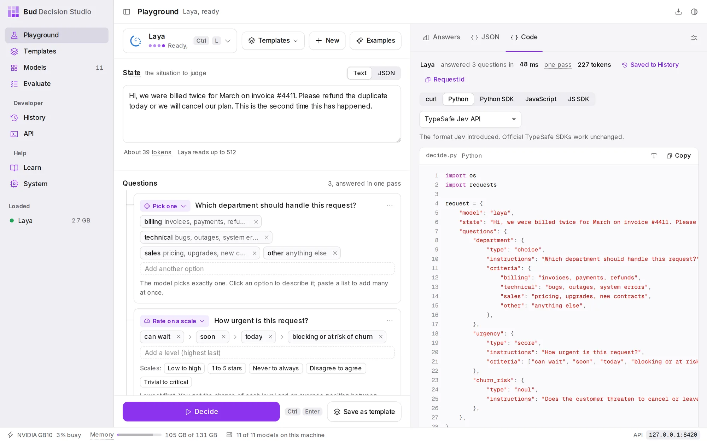
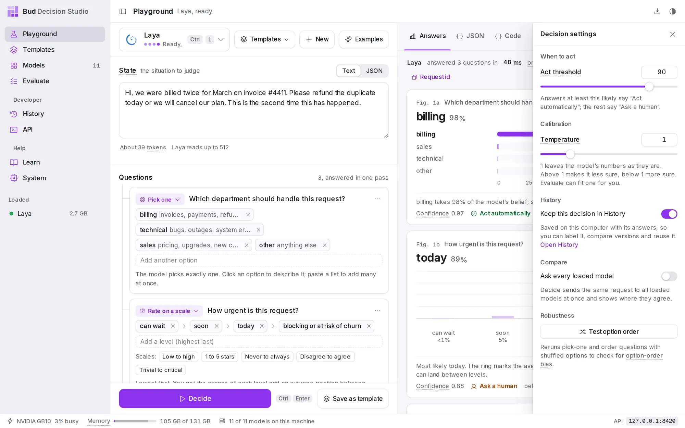
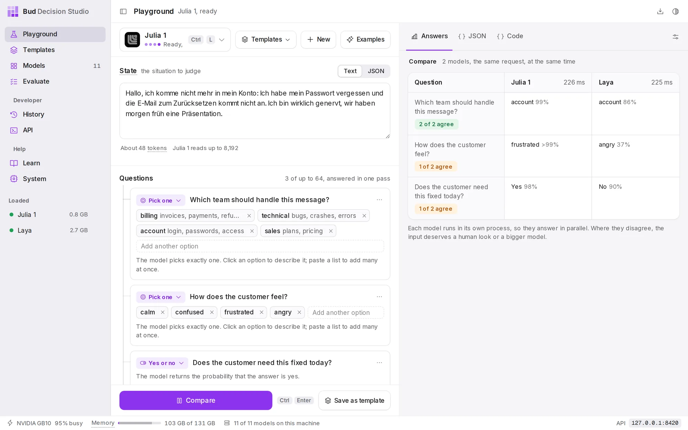
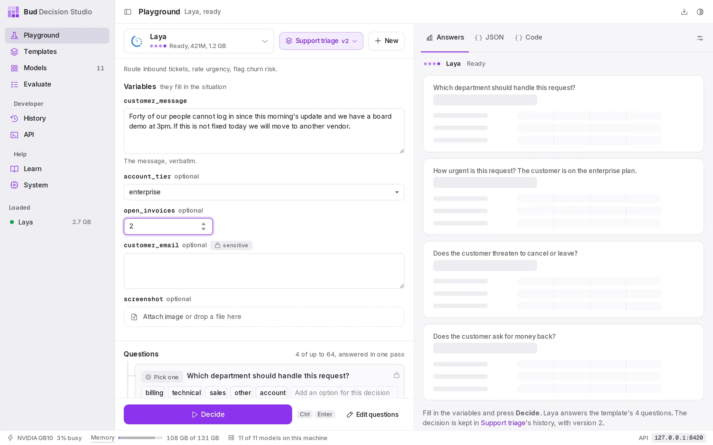
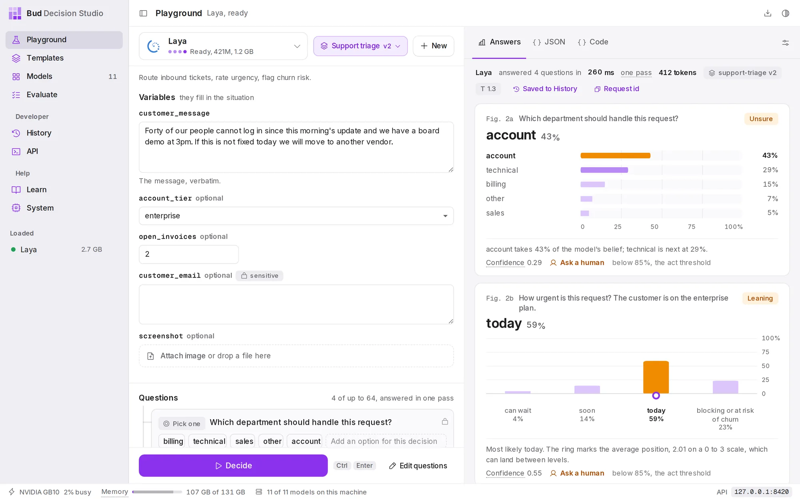
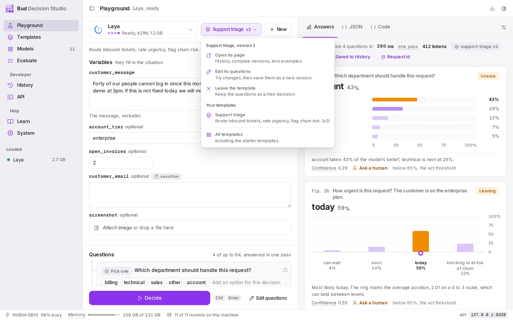

DocsUser manual
Playground
The Playground is where you try a decision. You describe the situation, write the questions with the answers you allow, press Decide, and read each answer as a chart. When it works, you save it as a template for your code.
The layout#

The left column is the decision you are building; the right column is what the model answered. The row at the top of the left column has the model button, the Templates menu, New and Examples. Decide is pinned to the bottom of the left column, beside Save as template. The sliders button at the top right of the answers opens the decision settings.
The Playground remembers your draft (the situation, the questions and the model) in this window, so it is still there the next time you open the app.
Choose a model#
The model button shows the model in use, whether it is loaded, its size and the memory it needs. Choose it, or press Ctrl L, to open the model list.

Choosing a model that is not loaded loads it with its default settings. To choose its load settings first (for example, a longer context), turn on Choose load settings first at the bottom of the list, or hold Alt while you choose. Choosing a model you have not downloaded starts its download. Models too large for this computer are marked Too large here or Needs a GPU.
If you choose a model while an example is showing unchanged, the Playground switches to an example made for that model, so you see what it is good at straight away. A message offers Undo.
Describe the situation#
Under State, type or paste what you want judged: an email, a support ticket, a review, a log line, a policy and a request. Use Text for prose and JSON for structured data, such as a ticket with its customer's plan:
{ "ticket": "We were billed twice for March.", "plan": "enterprise", "open_invoices": 2 }Below the box, the studio estimates the length in tokens (about three quarters of a word each) and shows how much the model reads. Laya reads 512 tokens; most larger models read 8,192. In JSON mode it also says whether the JSON is valid.
Images, audio and video. With a model that reads them (Intern-Decision 4B reads images; Jev-Omni reads images, audio and video), an Attach area appears under the situation. Drop a file on it or choose it, or use one of the image Samples (Shop receipt, Revenue chart). If you switch to a model that cannot read an attached file, a note says so.
Ask questions#
Under Create new Decision, choose the kind of answer you want. You can add as many questions as the model allows; it answers them all at once, in one pass.

| Kind | You write | You get back |
|---|---|---|
| Pick one | a list of options | a probability for every option; exactly one is the answer |
| Rate on a scale | 2 to 10 ordered levels, lowest first | a probability for every level, plus an average position that can land between levels |
| Yes or no | a statement | the probability that it is true |
| Pick any | a list of options and a cut-off | every option above the cut-off, each judged on its own |
| Put in order | a list of options | all options, most likely first |
| Estimate a number | the values it could take | a best estimate and an 80% range |
The first three are the types TypeSafe's Jev API defines (choice, score and noul); the studio builds the other three from them, so every model can answer all six. The six question types explains each one and when to use it.
Each question is a card:
- The kind is the menu at the top left; change it at any time.
- The question is a sentence, such as "Which department should handle this request?" Write it the way you would ask a colleague.
- The options are chips. Type one in Add another option and press Enter; paste a list to add many at once. Choose an option to give it a short description the model also reads, such as
billing: "invoices, payments, refunds". Descriptions help when a name alone could be misread. - Scales offer ready-made levels (Low to high, 1 to 5 stars, Never to always, Disagree to agree, Trivial to critical), and numbers offer ready-made values (0 to 10, Days, Percent, Hours).
- The ... menu moves the question up or down, duplicates it, renames the key its answer has in the API response (Rename its API key, such as
department), or deletes it.
The count beside Questions says how many you have and how many the model takes in one pass.
Starting points. Examples lists ready-made decisions, grouped by use, with the ones made for the current model first. New clears the situation, questions and attachments but keeps the model and settings; a message offers Undo.

Decide and read the answers#
Press Decide or Ctrl Enter. If the model is not loaded, it loads first and the answers area shows its progress. While the model reads, each question card lights up in turn.
The line above the answers records the run: the model, how many questions it answered and how long it took, the number of tokens it read, the template and version if you used one, and Saved to History, which opens the decision in History. Request id copies the id of the request, useful for matching logs.
Every answer is a numbered figure:
- The answer in large type, with its probability.
- A label at the top right: Very sure (90% or more), Fairly sure (75% or more), Leaning (55% or more) or Unsure.
- The chart: every option on the same 0 to 100% scale for Pick one, Pick any and Put in order; a column per level for Rate on a scale, with a ring at the average position; a single bar from no to yes for Yes or no; and a stem per value, with the 80% range shaded, for Estimate a number.
- The caption says it in words, gives the Confidence (how far the answer is from a coin toss: 0 means the model cannot tell the options apart, 1 means all its belief is on one answer), and ends with the verdict: Act automatically, or Ask a human and the threshold it fell below.
The JSON and Code tabs#
JSON shows the exact request the Playground sent to POST / and the response it received, as expandable trees. Code writes the same decision as a program you can copy:

For a decision without a template, the formats are TypeSafe Jev API, OpenRouter Decisions API and Vercel AI Gateway; the same questions work on each. With a template open, the Code tab shows the studio API call that runs the template, pinned to its version. Attached files are left out of the code; send them as media items.
Decision settings#
The sliders button above the answers opens the decision settings.

| Setting | What it does |
|---|---|
| Act threshold | The rule for trusting an answer: at or above this probability, the verdict is Act automatically; below it, Ask a human. From 50% to 99%; 90% by default. |
| Temperature | A calibration temperature: one number that makes the model's probabilities less sure (above 1) or more sure (below 1) without changing which answer wins. 1 leaves them as they are. Evaluate can fit one for you. |
| Keep this decision in History | On by default. Off, nothing about these decisions is saved, the same as "store": false from code. |
| Ask every loaded model | Turns Decide into Compare: the same request goes to every loaded model at once. Not available with a template open. |
| Test option order | Reruns the decision five times with the options shuffled. Not available with a template open. |
Moving the threshold after a decision previews the result: the figures redraw their verdicts at the new value and a note says "Previewing an act threshold of 80%. The decision was made at 90%". Press Decide to make the decision with the new value.
With a template open, the threshold and temperature start at the template's own values. Changing them applies to this decision only, and the panel offers Use the template's to go back.
Compare models#
Load two or more models, turn on Ask every loaded model and press Compare. Each model runs in its own process, so they answer in parallel.

Each row is a question; each column is a model with its answer, probability and time. Where models disagree, the input deserves a human look or a bigger model. Each model's decision is kept in History.
Test option order#
Some models favour an option because of where it appears in the list. Test option order checks for this on your pick-one and put-in-order questions with three or more options: it runs the decision five times, the first in your order and the rest shuffled. Stable means the same answer every time. Changes with order means the answer depends on the order: treat it as unsure, reword the options, or try a larger model.
Use a template#
A template is a saved decision your code can call by name. In the Playground, the Templates button lists your templates, All templates (including the starter templates) and, when no template is open, Save this decision as a template.
Opening a template changes the left column:

- Variables replace the situation box when the template has them. Fill them in; the template turns them into the situation the model reads. A variable marked sensitive is used for the decision but never written to History.
- The template's questions are listed and locked. Where the template allows it, you can skip a question for this decision (the switch beside it) or add an option to it (Add an option for this decision).
- Your questions for this decision, under the template's, are extra questions asked alongside the template's in this decision only. The template itself does not change.

To change the template's own questions, choose Edit questions. The questions unlock and a note says you are editing. Decide tries your changes without saving them (these trial decisions are kept in History as drafts of the version you started from). Save version asks what changed and saves the edits as the template's next version; Discard edits goes back. If someone saved a new version while you were editing, the studio refuses to overwrite it and offers Reload; your edits stay in the Playground until you do.
Starter templates are read only: open one, then Clone to edit it on the Templates page.

Save a decision as a template#
When a decision works, choose Save as template. Give it a name; the id your code will use fills in from the name (lower-case letters, digits, dashes and underscores), and you can change it. The template keeps the questions, the current model as its default model, and the current act threshold and temperature.
To give the situation a fixed shape, write placeholders in it before saving, such as:
Customer on the {{account_tier}} plan wrote: {{customer_message}}Each placeholder becomes a variable that callers fill in, and the rest of the text stays fixed. Without placeholders, callers send the whole situation each time. Templates covers variables, versions and everything else a template holds.